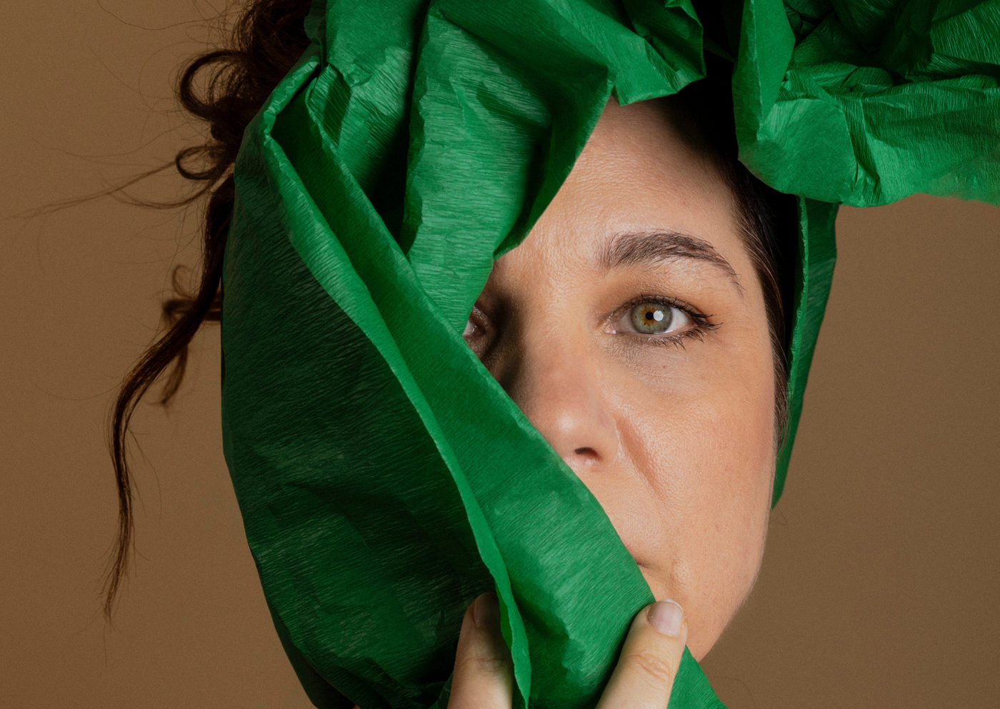

“JANDIRA - Em Busca do Bonde Perdido”: solo com Isabel Teixeira estreia no Tucarena

Após uma temporada de sucesso no Rio de Janeiro, o emocionante último texto da atriz e dramaturga Jandira Martini (1945-2024) chega a São Paulo.
Em “JANDIRA – Em Busca do Bonde Perdido”, a dramaturga compartilha uma tocante reflexão autobiográfica, abordando com humor e poesia a inevitabilidade da finitude.
Escrito pouco antes de sua morte, o texto é inspirado na própria trajetória de Martini e sua dedicação ao teatro. Em suas palavras, “um monólogo sobre uma situação imprevista, surpreendente. Uma atriz que se revela, diante de seu público, ao narrar, com humor, sua inesperada e assustadora experiência. Auto ficção? Sem dúvida. Um stand-up? Seria, se fosse cômico. E cômico não chega a ser. Nem trágico. Apenas dramático.”
A montagem inédita estreia no Tucarena, dia 11 de outubro, e fica em cartaz até 8 de dezembro, com sessões às sextas (21h), sábados (19h) e domingos (17h).
Isabel Teixeira encarna Jandira Martini em solo emocionante
Com 40 anos de carreira e prêmios como APCA, APETESP e SHELL, Isabel Teixeira, um dos nomes mais aclamados do teatro brasileiro, interpreta a dramaturgia de Jandira Martini neste solo. A direção fica por conta de Marcos Caruso, parceiro de longa data de Martini, com quem escreveu diversas peças e roteiros para TV e cinema. O projeto é uma realização da Mesa2 Produções, de Fernando Cardoso e Roberto Monteiro.
O espetáculo leva o público a uma imersão nas memórias da autora, com um texto enxuto, direto e repleto de referências aos blocos carnavalescos de Santos, terra natal de Jandira. A peça aborda momentos da infância, experiências marcantes e sua trajetória de vida dedicada ao teatro.
Marcos Caruso celebra parceria de 40 anos com Jandira Martini
“O texto de Jandira é uma exposição corajosa e surpreendente, revelando uma intimidade que poucos conheceram. É uma peça que fala de uma dor universal, mas sempre com humor e poesia. Convidar Isabel Teixeira para dar vida a essa obra foi um grande acerto. Ela respira e transpira teatro, assim como Jandira.”, comenta Marcos Caruso.
Para Teixeira, o espetáculo vai além da atuação: “Caruso e Jandira são atores que escrevem. Nos ensaios, percebi que a parceria entre eles continua viva. Agora, como atriz, faço parte dessa história, celebrando a vida de Jandira, o teatro e tudo o que ela representa para a cena.”
Reflexões sobre vida e morte com um toque de poesia e humor
Durante os momentos mais difíceis, a personagem de Jandira encontra consolo nas palavras de autores como Molière, Machado de Assis, Oscar Wilde e Shakespeare. A escrita é retratada como um fluxo que conduz ao entendimento pessoal, e Jandira faz questão de transmitir isso ao público.
“Talvez valha a pena”, escreveu Jandira. Isabel Teixeira reforça: “Quero dizer isso ao público todas as noites.”
Minimalismo e profundidade em cena
Sobre a concepção da montagem, Marcos Caruso destaca: “Optei por um espetáculo onde apenas o absolutamente essencial estará em cena. Essa foi minha maneira de honrar Jandira e nossa parceria de quase 40 anos.”
Com uma combinação de texto potente, direção sensível e uma interpretação visceral de Isabel Teixeira, “JANDIRA - Em Busca do Bonde Perdido” promete ser um dos grandes destaques da temporada teatral paulistana.
Serviço:
Local: Tucarena
Estreia: 11 de outubro
Temporada: até 8 de dezembro
Horários: Sextas às 21h, sábados às 19h, domingos às 17h“JANDIRA - Em Busca do Bonde Perdido”: solo com Isabel Teixeira estreia no Tucarena